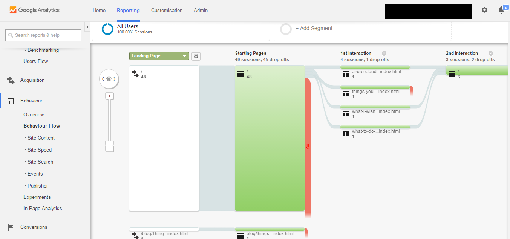
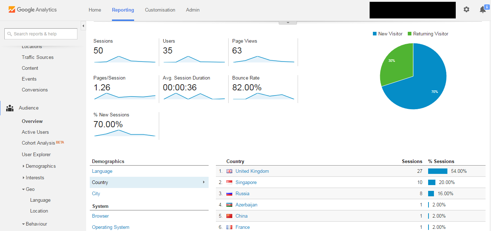

Using Google Analytics For Your Website
Have you ever wondered who visit your blog or website the most? Or even which pages they go to? Or even how long do they stay in the pages? All these are easily tracked using analytic tools such as Google Analytics (GA). You might not appreciate this feature but if you are in the business of opening up online store, fundraising or campaign website for a particular cause, then you might want learn about this.
There are plethora of tools available on Internet today but here I will focus on GA. After searching online, I found that GA is relatively more reliable, as it uses javascript embedded in your website. As a result, bot machines that are trying to mimick human users will not be recorded in the GA data (but take it with a pinch of salt as I am searching this on Google, GA may not be the best).
-
Follow Google's official documentation on how to setup GA for your Google account.
-
One thing to highlight when you are pasting the Javascript code to your website, you have to ensure it is included in all (otherwise some) of the pages that you want GA to track. This can be done conveniently if you use template, layout or other similar container so you only need to paste the Javascript there.
-
After everything has been set up properly, you can go to the dashboard and play around with the options to display the data. There are tons of options that you can play around with so take your time to explore them.
Below are the sample screenshots taken for the GA data for this site.

As you can see you can study where your users are from, their behaviour, browsers, how long they stay in certain pages, etc. (sometimes the depth of details can be rather creepy but that's how it works).

The first day, however, you will not have any significant data so you have to wait for the next day to see how your website performs. By default, the date configuration may be in such a way that you will not see any data. You can configure the date range of the data on the top right hand of the screen.
-
The next step I think is the most important of all: what are you going to do with the data. Some people may improve the user interface so that certain elements can be more prominent so that more people click them. Some perhaps implement other marketing strategy to cater to the current userss behaviour. The possibility is limitless.
There you go! You have witnessed the glimps on how companies or big corporates learn about our behaviour online. This is just a simple example and there are a lot more advanced tools out there that can do much more than GA. But no worries, most of the data captured online is to better understand the users (us) so that they can provide better services. At least that is what I hope.